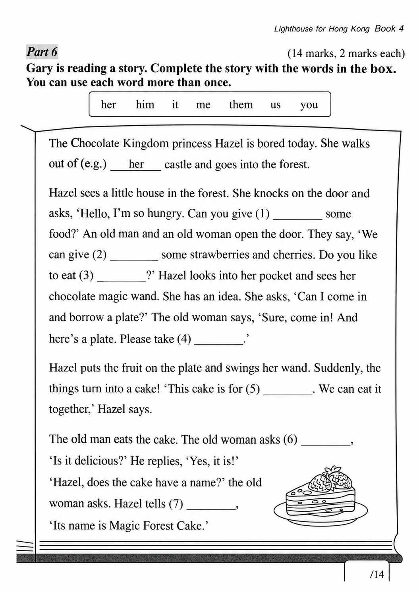
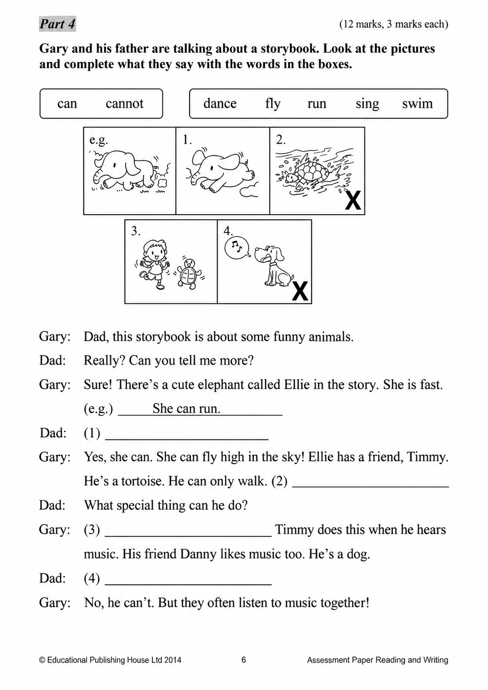

已掌握
| # | 中文意思 | 例句/提示 | 英文默写 | 已掌握 |
|---|---|---|---|---|
| noun 名词 | ||||
| 1 | 父母 | My love me. | ||
| 2 | 野餐 | We have a in the park. | ||
| 3 | 银行 | My mum goes to the . | ||
| 4 | 窗户 | Open the , please. | ||
| 5 | 双胞胎 | My brother and I have the same birthday. | ||
| 6 | 晚饭 | We eat at home. | ||
| 7 | 曲奇饼 | Mum baked some . | ||
| 8 | 售货员 | The helped me find a notebook. | ||
| verb 动词 | ||||
| 9 | 吃饭 | We together every evening. | ||
| 10 | 称重 | We the bag. | ||
| preposition 介词 | ||||
| 11 | 在……之上 | The clock is the board. | ||
| phrase 短语 | ||||
| 12 | 摆餐具 | I before dinner. | ||
| adjective 形容词 | ||||
| 13 | 小的 | There is a flower in the grass. | ||
| verb phrase 动词短语 | ||||
| 14 | 使某人振作起来 | A funny story can . | ||
| noun/verb 名词/动词 | ||||
| 15 | 锻炼 | is good for your health. | ||
| adverb 副词 | ||||
| 16 | 很少 | I eat sweets. | ||
| uncategorized 未分类 | ||||
| 17 | 借用 | May I your pencil? | ||
| 18 | 遮盖 | Please the bowl with a lid. | ||
| 19 | 找到 | I cannot my pencil. | ||
| 20 | 相信 | I you are telling the truth. | ||
| # | 单词/词组 | 中文意思 | 例句/说明 | 已掌握 |
|---|---|---|---|---|
| adjective 形容词 | ||||
| 1 | sad | I feel sad because I miss my friends. | ||
| 2 | honest | She is honest. She does not tell lies. | ||
| 3 | wise | The wise man gave good advice. | ||
| noun 名词 | ||||
| 4 | poem | Read the poem. | ||
| 5 | Australia | Australia is a big country. | ||
| 6 | belt | He wears a black belt. | ||
| 7 | clue | This clue helps me. | ||
| 8 | piece | I want one piece of paper. | ||
| 9 | musician | The musician plays music. | ||
| 10 | cinema | We watched a film at the cinema. | ||
| 11 | PE | He's good at PE. | ||
| noun phrase 名词短语 | ||||
| 12 | a packet of French fries | I'd like a packet of French fries. | ||
| 13 | a pot | Put some water into a pot. | ||
| verb 动词 | ||||
| 14 | celebrate | We celebrate my birthday. | ||
| 15 | wrap | Please wrap the present in paper. | ||
| 16 | reply | Please reply to my email. | ||
| 17 | collect | I collect stamps. | ||
| 18 | roll | The ball can roll. | ||
| 19 | cut | Cut the cheese into thin slices. | ||
| verb phrase 动词短语 | ||||
| 20 | play basketball | Can you play basketball? Yes, I can. | ||
| 21 | play tennis | I like to play tennis with my friend. | ||
| 22 | play mini golf | I like to play mini golf at the weekend. | ||
| 23 | play the violin | He wants to learn to play the violin. | ||
| 24 | have a picnic | I want to go there because I want to have a picnic. | ||
| 25 | pick fruit | We pick fruit in the fruit fields. | ||
| 26 | playing board games | We like playing board games. | ||
| 27 | watching TV | He likes watching TV. | ||
| 28 | paint pictures | I like to paint pictures after school. | ||
| uncategorized 未分类 | ||||
| 29 | magician | The magician made a coin disappear. | ||
| 30 | thought | I had a thought about how to solve the problem. | ||
| # | 中文意思 | 例句/提示 | 英文默写 | 已掌握 |
|---|---|---|---|---|
| time/date 时间日期 | ||||
| 1 | 九月 | is the ninth month. | ||
| 2 | 星期一 | is a weekday. | ||
| 3 | 星期三 | is a weekday. | ||
| time unit 时间单位 | ||||
| 4 | 日 | A has 24 hours. | ||
| 5 | 时 | An has 60 minutes. | ||
| 6 | 分 | A has 60 seconds. | ||
| directions 方向 | ||||
| 7 | 北 | is a direction. | ||
| 8 | 南 | is a direction. | ||
| numbers 数字 | ||||
| 9 | 7 | is 7. | ||
| 10 | 10 | is 10. | ||
| 11 | 18 | is 18. | ||
| 12 | 百 | One is 100. | ||
| solid shape 立体图形 | ||||
| 13 | 五棱柱 | A has pentagonal faces. | ||
| 14 | 四棱锥 | A has one quadrilateral base and four triangular side faces. | ||
| 15 | 球 | A is round. | ||
| # | 单词/词组 | 中文意思 | 例句/说明 | 已掌握 |
|---|---|---|---|---|
| numbers 数字 | ||||
| 1 | 3-digit number | A 3-digit number has three digits. | ||
| operations 运算 | ||||
| 2 | be left | How many apples will be left? | ||
| geometry 几何 | ||||
| 3 | curve | Draw a curve. | ||
| 4 | opposite side | In a rectangle, the opposite sides are equal. | ||
| 5 | adjacent side | These are adjacent sides. | ||
| directions 方向 | ||||
| 6 | direction | Direction tells us where to go. | ||
| question word 题目词 | ||||
| 7 | backwards | Count backwards from 20. | ||
| 8 | respectively | Tom and Ben have 2 and 3 books respectively. | ||
| shape 形状 | ||||
| 9 | circle | Draw a circle around the answer. | ||
| answer 答案 | ||||
| 10 | result | Check the result after you calculate. | ||
| 11 | correct | Choose the correct answer. | ||
| place value 位值 | ||||
| 12 | tens | The digit is in the tens place. | ||
| comparison 比较 | ||||
| 13 | heaviest | The 3 kg bag is the heaviest of the 1 kg, 2 kg and 3 kg bags. | ||
| operations calculation 运算 | ||||
| 14 | product | The product is the answer in multiplication. | ||
| 15 | expression | Write the expression in horizontal form. | ||
| 16 | equally | Share the apples equally. | ||
| 17 | divisor | The divisor divides the dividend. | ||
| 18 | remainder | The remainder is left after division. | ||
| 19 | horizontal form | Write it in horizontal form. | ||
| 20 | divide A by B | Divide A by B. | ||
| teacher math vocabulary 老师数学词汇 | ||||
| 21 | start | Start counting from ten. | ||
| currency money 货币 | ||||
| 22 | cent | One cent is a small amount of money. | ||
| 23 | expensive | This toy costs $50. It is more expensive than the $20 toy. | ||
| measurement 测量 | ||||
| 24 | balance | We use a balance to compare the weights of two objects. | ||
| 25 | gram | One gram is one thousandth of a kilogram. | ||
| position order 位置和顺序 | ||||
| 26 | following | Answer the following questions. | ||
| geometry tool 几何工具 | ||||
| 27 | set square | A set square helps us draw angles. | ||
| 句型结构 | ||||
| 28 | Angle ... is the smallest. | Angle B is the smallest. | ||
| plane shape 平面图形 | ||||
| 29 | lower base | The lower base of this trapezium is 7 cm long. | ||
| 30 | leg | A leg of a trapezium is a non-parallel side. | ||

